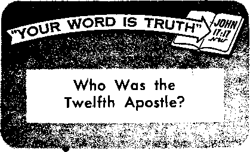

PAPAL INFALLIBILITY RAISED A CATHOLIC STORM
Many priests rejected the infaH«b.Uiv doctrine
Can Union Members Trust Their Leaders? How secure are union funds? .....
Can Housewives Afford to Work?
Does a pav check compensate tor whar the famils loses?
Your Brain Is a Set of Twins
THE MISSION OF THIS JOURNAL
News'Sources that are able io keep you awake to the vital issues of our times must be unfettered by censorship and selfish Interests. "Awake 1” has no fetters. It recognizes facte, faces facte. Is free to publish facte. It is not bound by political ambitions or obligations; it Is unhampered by advertisers whose toes must not be trodden on; it is unprejudiced by traditional creeds. This Journal keeps itself free that it may speak freely to you. But it does not abuse its freedom. It maintains integrity to truth.
“Awake 1" uses the regular news channels, but is not dependent on them. Its own correspondents are on all continents, in scores of nations. From the four corners of the earth their uncensored, on-the-scenes reports come to you through these columns. This Journal's viewpoint is not narrow, but is international. It is read in many nations, In many languages, by persons of all ages. Through Ite pages many fields of knowledge pass in review—government, commerce, religion, history, geography, science, social conditions, natural wonders—why, its coverage is as broad as the earth and as high as the heavens.
“Awake I” pledges itself to righteous principles, to exposing hidden foes and subtle dangers, to championing freedom for all, to comforting mourners and strengthening those disheartened by the failures of a delinquent world, reflecting sure hope for the establishment of a righteous New World.
Get acquainted with “Awake!” Keep awake by reading “Awake!”
Published Semimonthly By
WATCHTOWER BIBLE AND TRACT SOCIETY OF NEW YORK. INC. 11T Adams Street, Brooklyn 1, New York, U. S. A. N. H. Knohb, President Grant Suitib, Secretary
Printing this issue: 2,400,000
Otkr tingaagn In which "Awake!” I» g< bl Shed: Semlwawthly—Africans. Finnish, French, German, Greek, Hciaudlsb, Italian, Norw^ian, Spanlah, tnvedBh.
■ onHIy-—Danish, ludcnealan, Japanese, Portuguese, Ckrelnlan.
Yearly subscrlpUcu rates
Bffiw lor semimonthly edftlune
Awtrlu, U.S., 117 Adams St., Brooklyn 1, N.Y. fl Ailtrilla, 11 Beresford Rd.. Sirathfleld N.S.W. 8/-Canada, 150 Bridgeland Are.. Toronto 10, Ont. JI Eni land, 84 Craren Terrace, London, W. 3 7/-
New inland, G.P-0, Bos 30, Wellington, C. 1 7/-Snth Africa, Private Bag, Elandsfonteln, Tri. 7/-
Nontbly edition ent half He akoee rates.
Five cents a copy
Hem I Han ms .should be sent to office in rear country iri compliance with regulations to guarantee safe delivery of money. Bemlttanees are accepted al Brooklyn from countries where no office Is located, by International money order only. Subscription rains In different countries are here stated In local currency. Notion of ei plrat Ion (with renewal blank) la rent at least two issues before subscription espires. Change of nddnu whan went to our office may be eipwled effective within one mentli. Semi your old as well as new address.
Entered as second-class mailer at Brooklyn, N. Y. Printed In U.S.A.
CONTENTS
Papal Infallibility Raised a
Can Union Members Trust Their Leaders? 9 ‘‘Unneeded Transfusions’’
Can Housewives Afford to Work?
How Fast Does the Deer Fly Fly?
Gooney Birds Baffle Biologists
Babel’s Tower in the Legends of
“Your Word Is Truth”
Jehovah’s Witnesses Preach In All the
harmful helpful
HAT does it take to throw a peaceful crowd into wild-eyed hysteria? Just one thing—fear. A frightened shout of “Fire!” will stampede it like a herd of terrified cattle.
Because of its infectious nature some authorities consider fear to be mankind’s most contagious disease. Along this line of thought Science Digest of July, 1951, said that science “has discovered by laboratory studies that fear is even more contagious than the most communicable disease. Tests show that just being near a fear-ridden person will cause you to be vaguely fearful without knowing why. And recent studies at the University of California show that you can be instantly affected merely by listening to the voice recordings of anxiety-ridden persons.”
When this disease sweeps through a nation as it does a crowd reason is pushed aside, logic is forgotten and moral principles are ignored. The end results can be a frightful war. Knowledge of this is a constant worry to men in authority. Yet fears in the East and the West continue to mount dangerously. If they reach the point of unreasoning hysteria, this world will become an atomic nightmare. Hence, the chief thing men have to fear is fear itself.
It is not difficult to see how fear can drive a crowd into hysterical acts of violence when its effects on an individual are considered. It has been found that even mild fear will interfere with a person’s mental processes. He will not be able to think properly. That is the reason a fear-striken crowd can destroy and kill without an instant’s hesitation. Their thinking is wrong.
Under extreme fear a person can even forget his name or lose consciousness. There was a case in Britain where a particularly frightening scene in a movie had to be cut out because it had caused a number of spectators to collapse in an unconscious state.
But fear can do yet more. It can cause complete paralysis and instant death. Examples of this would be persons who have died after being bitten by a nonpoisonous snake. It was nothing more than fear that killed them.
Since fear can do these things to an individual, think what it can do to many people, to even a nation. Little wonder is it that fear is classed as a deadly disease. Note the observation Science Digest made on its ill effects: “Indeed, fear and anxiety can produce plenty of physical havoc even in comparatively mild forms. And as they increase in intensity, they develop a wallop that can be as deadly as the most lethal poison. First, there is a terrific spasm that contracts the blood vessels; then violent contraction of the heart; after this, complete paralysis and death.”
It must not be assumed, however, that fear always has ill effects, for that is not so. If a person drives a car it is for his own good to cultivate the fear of passing on a curve. There is also fear of the law, and that is good for the community as a whole. Another fear, a very important one, that should be cultivated is the fear of God. When a person cultivates this fear he will not turn away to other gods. He will not forsake his Creator for dumb idols. That is why the Bible says: “The fear of Jehovah is the beginning of wisdom.”—Psalm 111:10, Am. Stan. Ver.
Those who love Jehovah God are those who fear him rather than men. Even though worldly governments want them to give to Caesar what belongs to God they refuse to compromise. God comes first. No matter how much a government may persecute them to force a compromise they will not break integrity to God.
Jesus foretold that the world would have no love for such ones. He said: “If you were part of the world, the world would be fond of what is its own. Now because you are no part of the world, but I have chosen you out of the world, on this account the world hates you."—John 15:19, New World Trans.
This hatred could strike fear in the Christian if it were not for his love of God. By means of it he is able to overcome the fear of worldly persecution. It is written: “There is no fear in love, but perfect love throws fear outside.”—1 John 4:18, New World Trans,
A person can develop this attitude by exercising love for God above everything else. Then he will not experience the damaging fears that plague mankind in general. He will not cower in fear of despotic rulers and compromise Christian principles. Because his fear will be for God and his trust will be in that Supreme One, he will enjoy peace of mind in a fear-ridden world. He will have freedom from the damaging type of fear that is an enemy of mankind. The fear of God therefore can be considered as a friend. Its possession is indeed “the beginning of wisdom.”
<■ If you are inclined to think that a dog’s life in the United States is rough, you should see what dogs are going through in Russia. According to the Mother Goose stories, it is the cow that jumps over the moon. If Russian scientists have any say-so in the matter, it will be the dog and not the cow that will be the first to scale the moon. The trade union paper Trud announced that the Russians had taken two dogs and sent them in separate rockets to a height of 68.31 miles. The dogs were sealed in glass cases containing oxygen. At differing heights the cases were ejected automatically from the rockets and the animals parachuted safely back to earth. The dog will go farther into space than man will ever go. That is the opinion of Dr. Lee de Forest, the man who invented the radio tube. He predicts that man will never reach the moon. Says Dr. De Forest, Man is Inherently an earthly creature and only his scientific imagination will ever make him a planetary emigrant. He suggests that man concentrate his greatest efforts to improving existing conditions on earth, and, a science writer adds, “leave all this space travel to the dog.”
THE dogma of the pope’s infallibility did indeed raise a storm among Catholic theologians and prelates. It did to such an extent that some broke away to form the sect of “Old Catholics.’’
As for the dogma of infallibility, its .closing paragraph states; “Faithfully adhering to the tradition handed down ... we teach and define it to be a doctrine divinely revealed, that, when the Roman pontiff speaks ex cathedra, that is, when in the exercise of his office of pastor and teacher of all Christians, and in virtue of his supreme apostolic authority, he defines that a doctrine of faith or morals is to be held by the universal Church, he possesses, through the divine assistance promised to him in the blessed Peter, that infallibility with which the divine Redeemer willed his Church to be endowed, in defining a doctrine of faith and morals; and therefore that such definitions of the Roman pontiff are irreform-able of themselves, and not by force of the consent of the Church thereto.”—Rome, July 18, 1870.1
During the course of the proceedings some 775 different prelates and theologians were at one time or another present at the council. Among these were forty-seven cardinals and 117 archbishops.2 When the real
‘j Why did cardinals, archbishops \ \ and other Catholic prelates pro- \ *i test the Infallibility doctrine ? \
purpose of the council was revealed to them a storm of protest arose, and that even though they had been placed under a vow of secrecy.3 Every land had its noted theologians and prelates who were strongly opposed to defining this dogma.2
If the defining of the dogma of infallibility had depended upon the merits of the scholarship of those in favor of it, the dogma would have died at birth. How so? Because, as expressed in one of the series of letters on the inside workings of the council, which were published at the time in Germany under the pseudonym “Quiri-nus”: “The predilection for the Infallibility theory is in precise proportion to the ignorance of its advocates.”1
Thus we note first of all the opinion England’s foremost Catholic scholar, Lord Acton, had of Pope Pius IX; intellectually inferior to his predecessor and with no knowledge whatever of theological matters. “Nobody feels that the pope will think less of him because he knows nothing at all,”8
On the one hand, the pope’s most ardent supporters were the Italian prelates with the least learning. On the other hand, among those opposed was the archbishop of Paris, Darboy, “a learned, conscientious and respected prelate.”* Also opposed were Bishop Du-panloup of Orleans, who had refused higher offices in the chtirch and who “was without question one of the ablest French bishops of his day,”7 and the cardinal archbishop of Prague, Schwarzenberg, for more than forty years “the leading churchman in Austria,” even though no friend of church politics.8
Also opposed was Prince-archbishop Rauscher ®f Vienna, who did so much for the Catholic Church in Austria that he is described as a “providential personality.” Further, there was Bishop Strossmayer, doctor of theology at the leading Croatian university, of whom we are told: “At the Vatican Council he was one of the most notable opponents of papal infallibility, and distinguished himself as a speaker.”8
Another learned opponent to infallibility was Bishop Hefele of Germany. “He was one of the most prominent bishops of the opposition minority. He even published the reason for the stand he had taken” in Naples, 1870, as did others also, since such could not be published in Rome itself.10
Archbishop Kenrick of St. Louis, Missouri, who had made “a profound impression” at the First Baltimore Plenary Council “by his logical keenness and great erudition,” was dogmatically opposed to the dogma.11 Newman, later made cardinal, also opposed it. He finally submitted even though he was ‘unable to reconcile it with well-ascertained historical facts.’13 In the end most of the opponents took this course in preference to being excommunicated.
The most outspoken theologian opposed to infallibility was Johann Dollinger, professor of religion at Munich University and leading German Catholic scholar of his generation. Under the pen name of Janus he wrote the book The Pope and the Council, in which he showed how untenable this dogma was in the light of church history and the Bible.
Opposition to Defining the Dogma
Why did so many oppose the infallibility dogma? There was objection because the council was not truly ecumenical. Those favoring infallibility were preferred. As a result Italian Catholics had four times the representation that the Germans and the French had.18 The very fact that a bare majority was to be sufficient to define the dogma further made the proceedings not truly ecumenical. Nor was the council free in action. The various committees and commissions were packed with Italian prelates in favor of infallibility.3
Coercive measures were also used. The prelates were continually reminded that their expenses were paid by the pope. One Chaldean patriarch had to resign because he had made a speech against the dogma. Others were penalized in other ways. To the wavering ones various inducements were held out: papal dispensations and fifteen cardinal’s hats were waiting to be bestowed.3
The debates were hamstrung by arbitrary rules of procedure. All discussion was in Latin, and not all had kept up with their Latin. Besides, Latin spoken by a German was quite different from Latin spoken by an Italian. Opponents were accused of heresy as though infallibility had already been made a dogma.3
Then there were those who opposed the infallibility dogma on what might be termed practical grounds. Some opposed it because it would widen the breach between Catholics and Protestants. Others opposed because of the fear that it would make rulers suspect the loyalty of their Catholic subjects. Subsequent facts show that these considerations were sound.3
Historical and Scriptural Grounds
The opposing prelates raised especially strong objections on the basis of the facts of religious history. Thus DOllinger stated that ‘'for thirteen centuries an incomprehensible silence on this fundamental article reigned through the whole Church history.” Bishop Hefele said that for thirty years he had sought proof of papal infallibility and had been unable to find it.:;
Archbishop Kenrick showed that Boniface VIII had claimed that all mankind was subject to him because of sin. But in 1788 five leading Roman Catholic universities denied that this was a teaching of the Catholic Church. Pope Honorius I had “taught things that cannot be reconciled with sound doctrine.” Not only had infallibility not been taught before in any catechism or document for public worship, Kenrick further pointed out, but for centuries the church had allowed it to be condemned. Proof of this was to be found in Bousset’s Exposition of the Faith, which expressly denies papal infallibility, and which had the approbation of Pope Innocent XI. Kenrick concluded: “It is no matter of faith to believe that the pope is in himself infallible.”14
How much of a reversal this dogma represented is to be seen by what appeared in Keenan’s Controversial Catechism for many, many years: “Q. Must not Catholics believe the pope himself to be infallible? A. This is a Protestant invention, it is no article of the Catholic faith; no decision of his can bind on pain of heresy, unless it be received and enforced by the teaching body, that is, by the bishops of the Church.”15 What had been a ‘Protestant invention’ before 1870 suddenly became a "doctrine divinely revealed,” so that all who opposed it were cursed!
Dollinger, in his book The Pope and the Council, gives many examples of contradictions of “infallible” popes, noting those also mentioned by Archbishop Kenrick. Among the others he mentions are the following: “Both Innocent I and Gelasius I . . . declared it to be so indispensable for infants to receive communion, that those who die without it go straight to hell. A thousand years later the Council of Trent anathematized this doctrine.” “In contrast to Pope Pelagius who had declared . . , the indispensable necessity of the invocation of the Trinity in baptism, Nicholas I assured the Bulgarians that baptism in the name of Christ alone was sufficient.”
“Celestine III tried to loosen the marriage tie by declaring it dissolved if either party became heretical. Innocent II annulled this decision, and Hadrian VI called Celestine a heretic for giving it.”
Pope Sixtus V, in his bull, declared that the edition of the Bible that had been corrected by his own hand “must be received as the only true and genuine one, under pain of excommunication, every change, even of a single word, being under anathema. But it soon appeared that it was full of blunders, some two thousand of them introduced by the pope himself.” So “copies were called in, manuscripts corrected and the printer was blamed,” at the instance of Cardinal Bellarmine.
And finally, there were the arguments that Kenrick and others based on the Scriptures. They insisted that Christ had not given Peter anything that he had not also given the other apostles, that while Peter had been preferred he had not been given supremacy over the other apostles. They also showed that the great majority of the “church fathers” did not apply Matthew 16:18 to Peter. Of eighty-five leading ones only seventeen held that Peter was the rock on which Christ built his church, whereas forty-four held that it was the truth that Jesus spoke, while sixteen believed the rock to be Jesus himself. Kenrick also argued that there is no Scriptural basis for holding that any human could be infallible. "The apostles were promised that they would not err, but “God only is infallible.”14
Surely these facts regarding a single incident in the history of the Catholic Church, and that in modern times, are sufficient to disprove her claim to be the one true church Christ established.
REFERENCES:
’McClintock and Strong’s Cj/cIoptEdio. Vol. 4, p. 575.
’ The CatftoHc Enciiclo-getlfa. Vol. 15. pp. 304,
J Lord Aston, by Hlm-melfarb, pp. 35-128. ,
* Letters from Rome on the Council, by Qulrtnus. p. 143.
‘ Lora Acton, p. 29.
e The Catholic Encyclo
pedia, Vol. 4, p. 6M.
IIbid., Vol. 5, p. 202.
• Ibid., Vol. 13, p. 596.
’ /bid., Vol, 14, p. 316.
“ /bid.. Vol. 7, pp. 191. 192.
a /bid., Vol. B, p, 61B.
12 Lora Acton, p. 156.
Dictionary of Religious Knowledge, by Abbott, p. 292.
” Inside the Vatican Council, by Kenrick.
“ /newts the Church of Rome, by Cusack, p. 82.
By “Awake!” correspondent in New Zeafand
■HOUGH a small country, New Zealand boasts the world’s largest man-made forest and the fourth-large st newsprint mill. This all came about through foresight and recommendations dating back to 1925, when an English visitor suggested that the 350,000-acre pumice plateau on the Kaingaroa plains be planted with pine trees.
11115 huge area of land had previously been covered with a sparse growth of tussock and had been of little value to the country’s dairy industry, as the pumice soil drained too easily to allow grass to grow as profusely as it does in other parts of New Zealand.
4? Government enterprise soon had the treeplanting project under way, using the exotic pine, Radlata, which since has proved to be a great asset to the country. Research as to the adaptability of this pine proved that from it could be made pulp and newsprint equal to the best in the world. The pumice soil on the Kaingaroa plains produced a dense and quick-growing forest, and with proper reforestation a continual yearly output of 23,000,000 cubic feet of timber is assured.
V Problems of milling were overcome by granting the timber rights to a private company. This company was heavily subsidized by the government to make possible the erection of a newsprint mill. At first the company had difficulty in deciding where to locate it. This, however, was decided for them several months after their incorporation in 1952, when geothermal steam was located along the Ta-rawera River on the east coast of New Zealand’s North Island. The river site is an ideal location for a mill, and by using underground steam it is expected to save 50,000 tons of coal each year.
The location is known as Kawerau. A town of “mushroom” growth, which is of international interest to the newsprint world, bears the same name. Here a $35,000,000 newsprint mill has now been constructed, together with groundwood pulp and chemical pulp mills. The paper machine, which is reputed to be the fastest in the world, will turn out 2,000 feet of newsprint a minute, or 75,000 tons of newsprint a year in its round-the-clock operations. Additionally, the plant will produce 72,000,000 board feet of sawn timber and upward of 50,000 tons of chemical pulp each year. Sawdust and bark, together with other mill wastes, are being used for fuel.
Little .did the native Maori of centuries past dream that the plains on which they fought their tribal wars and the small warm pools in which they bathed would someday grow such a magnificent forest and produce the steam power for New Zealand’s greatest industrial enterprise. Nor did the men that labored for $1.25 a day in planting the forest foresee the vast fruits of their labor.
A visitor’s suggestion gave birth to this huge enterprise that has blossomed to the enrichment of a nation. This well-planned exotic forest, with its evenly spaced trees that have grown to maturity in twenty-five years, is a joy to behold. How quickly the earth can be put to constructive use! What a joy when under the righteous rule of God’s kingdom the whole earth will thus be restored to ita full productiveness under direction of the greatest of all gardeners, Jehovah the almighty God!
CAN UNION MEMBERS TRUST THEIR LEADERS?
HERE is our money going? That is the big question union members are asking their leaders. Some receive satisfactory answers; many others do not.
They have good reason to be concerned. Recent Senate investigations have uncovered fraud, extortion, thievery and gangster rule among a disturbing number of union leaders.
The present investigations are being conducted by the Senate Select Committee on Improper Activities in the iabor or management field. It is under the chairmanship of Senator John L. McClellan of Arkansas. What his committee is uncovering is similar to what was turned up by other Senate committees.
When the special subcommittee on Education and Labor, for example, held hearings in Detroit, Los Angeles and Washington, D.C., it found loose administration of many union welfare funds, as well as dictation by union leaders. It also found evidence that union members, in some cases, were receiving 50 percent less in benefits than were being paid for by employers.
Then there was the committee under Senator Douglas that concentrated on the welfare funds. What it found was very disquieting to union members. It turned up a case in the Laundry Workers Union, where an insurance broker helped himself to $900,000 in premiums from union members and then split this sum with the secretary-treasurer of the union. In another case they found the head of several locals in Chicago was squandering union money on travel, entertainment, gifts and so forth. He was living high on money entrusted to him by union members.
The New York investigations ordered by former Governor Dewey were prompted by what was found in Local 32-E of the Building Service Employees International Union. It seems that the president, Thomas E. Lewis, had been freely spending money from the union's welfare fund, not only on himself, but on his friends as well. This revelation came after Lewis was found murdered by a hired gunman.
As the New York investigations progressed many other instances of embezzlement by union officials turned up. A sample of one is the case of a local president in the Retail, Wholesale and Department Store Union, who admitted that during a period of almost three years he and his assistant had taken from the welfare fund almost as much as the entire membership received in benefits.
New York investigators also found racketeering in the Distillery Workers Union. Reporting on this the New York Times of April 11,1955, said: "A new scandal came to light yesterday in the racket-tainted Distillery Workers Union, A.F.L. . . . The union’s former secretary-treasurer, Sol Ci-lento, already is under indictment for welfare fund racketeering. He is awaiting trial with two notorious gangsters ... on charges of having received $299,000 in welfare kickbacks in two years.” This close association of union leaders with gangsters is not uncommon, and may explain the murder of Thomas E. Lewis.
Corruption in the Teamsters Union
During the current investigations by the Senate committee under McClellan it has been found that money from Teamsters Union funds have been going not only into the pockets of some Teamsters’ officials but also into the pockets of underworld characters. Uere is what Time magazine of March 11,1957, said on this point: “The Teamsters’ Western Boss Frank Brewster, who came to power as Dave Beck’s first lieutenant (and followed Beck as Chairman of the union’s Western Conference), was described as having ordered a $3,900 Teamster loan to a Seattle racketeer for opening a tavern and gambling joint in Spokane. Brewster was also identified as having okayed a $17,000 union loan to help get another Seattle gambler out from under a federal tax lien.”
Brewster’s personal interests were also financed with union money. They provided him with box seats at West Coast horseracing tracks. They helped him satisfy his desire for race horses, fine clothes and beautiful homes. They paid for the travel and hotel expenses of a horse trainer who was handling his horses. They also paid a jockey who rode for him. Money entrusted to his care by hard-working teamsters permitted him to live extravagantly.
Should this misuse of union money upset union members, then what was done by the Teamsters’ president, Dave Beck, ought to make them sick. Here is what Robert F. Kennedy, chief counsel of the Senate Select Committee, said: “We have information . . . that Mr. Dave Beck took large sums of money from the Teamsters Union in Seattle, Washington, and used them for his own personal benefit.”
Beck has been accused of taking at least $300,000 of union money for personal use. He also has been charged with buying property next to a Teamster building in Seattle for $39,000 and then selling it to the union for $135,000.
There is also the incident of the memorial fund that was established for the widow of an honored union official. It was formed by contributions from Teamsters locals. Beck was accused of having personally profited from this fund by selling some mortgages to it at full-face value, which mortages he bought at a discount. He neglected to inform the widow of the full details in this sale. The transaction brought him and one of his business partners a neat profit of over $11,000.
Another transaction mentioned in the hearings was the selling of Beck’s $163,000 mansion to the Teamsters Union. Some of the construction costs, by the way, had been paid for by the union. Beck sold the house with an agreement that permits him to live in it free, with taxes and expenses paid by the Teamsters. The furnishings, which he continues to use, were also sold to the union.
These are only a few of the many serious charges made against the president of the Teamsters Union. Instead of denying them and presenting proof to support his denial, Beck has refused to answer the charges. Because of his obstinate refusal to co-operate with the investigating committee Senator McClellan was moved to say: “This witness, in my opinion, has shown utter contempt for this Committee, for the Congress of the United States and for his Government.” “Mr. Beck has shown flagrant disregard and disrespect for honest and reputable unionism and for the best interests and welfare of the laboring people of his country. Above all, he has shown arrogant contempt for the million and a half members, the honest laboring people in the Teamsters Union.”
Many of these laboring people are not very happy over the way their funds have been mishandled. This was shown in New York city at a meeting of Local 804. Reporting on the meeting the New York Times of April 1,1957, said: “Angry members of Local 804 of the International Brotherhood of Teamsters overwhelmingly vetoed yesterday a request by their officers for a $l-a-month dues increase. . . . Uncomplimentary references to Dave Beck, the union’s international president now under investigation by a United States Senate labor-management committee, were shouted from the floor. The local’s officers were accused of 'outlandish living.’ ... At the meeting here, rank-and-file teamsters made it clear they were taking some new looks at the union leadership.”
Other locals are expressing similar indignation and lack of trust in their leaders. One hanged a crude image of Beck. Another instructed its delegate to vote against Beck in the Teamsters’ September convention, and another won a court order forcing its officials to turn their records over to a bank for temporary custodianship. On May 14 the Teamsters’ largest district council, representing more than 125,000 members, heard a resolution demanding Beck’s resignation.
Complaints against union leadens are pouring into McClellan’s committee by the thousands. They come not only from teamsters but from members in many other unions. Of the thirty thousand letters received in the first month of hearings, about seventy-five percent were sent by average union members.
These letters accuse union leaders not only of helping themselves to union funds but of electing themselves to office; of not holding elections in many years; of threatening and beating members who protest their unlawful actions, and of receiving payoffs from employers under threats of crippling strikes.
Reports that appeared in the New York Times well illustrate this last charge. One was regarding two officials of the Teamsters Union who sought to extort $64,000 from members of a dairymen’s organization under threat of labor trouble in transporting milk. The other concerned an official of the Ornamental Iron Workers Union and a leader in the Heavy and General Construction Laborers Union. These men were indicted for attempting to extort $15,-000 from a construction contractor on the threat of work stoppage and labor trouble.
It should not be concluded, however, that labor racketeering exists in all unions. Senator McClellan expressed belief that the management of most unions is above reproach. Nevertheless, the corruption found thus far is bound to disturb union members. It is bound to cast suspicion upon their leaders as a whole.
Efforts to Clean Out Corruption
Definite effort is being made by the A.F.L.-C.I.O. to clean up its ranks. It has formed an Ethical Practices Committee to investigate and take action against corrupt union leaders. This committee has already accused three unions of being controlled or influenced by racketeers, and gave them 90 days to clean up or be expelled from the A.F.L.-C.I.O. federation. It also drew up an indictment against Beck that resulted in his being ousted as vice-president of the A.F.L.-C.I.O. Shortly thereafter he announced his intentions not to run for re-election as president of the Teamsters Union.
The responsibility to clean up labor rests upon labor itself rather than the government. George Meany, president of the A.F.L.-C.I.O., pointed out this fact when he said: “We have no intention of waiting for the public authorities to act in order that we may act on our own law of trade union ethics. That is our job and we are going to do it.” If they fail to do it they will undoubtedly be in for trouble with the government. In fact, special legislation
is already being discussed to give the government tighter control over labor unions.
It is the determination of responsible union leaders as well as the government to eliminate labor racketeering. President Eisenhower expressed this determination when he said:
“Labor racketeering, like corruption anywhere, is an abomination which must be eliminated if and whenever it occurs ... The American working man and woman deserve from labor leadership high standards of trust and fidelity. ... In the area of union welfare and pension plans, the Administration has, since 1954, repeatedly made specific legislative recommendations for the registration, reporting and disclosure of these plans. This legislation, I earnestly believe, should be enacted as speedily as possible.”
An effort in that regard was made last year by Senator Douglas, who introduced a bill that would require all union welfare and pension funds with more than a hundred persons to send a report to a regulating agency. The report would have to give detailed operations of the fund, the receipts, the reserves and the expenditures.
The bill would also require union officials to supply each union member with a condensed version of this report.
Without doubt union leaders should be required to give periodic financial reports to the membership. As it is now, many leaders do not do this. There have been cases where union officials did not even bother to keep books, but mixed union money right in with their own.
It is generally conceded that definite safeguards of union funds must be established in all labor unions. There must also be safeguards against union dictatorship and the denial of honest elections, as well as safeguards for employer protection against union extortion and strong-arm methods.
How extensive the labor-union cleanup must be will become clearer as the Senate Select Committee under McClellan continues its investigation. It appears at present that the committee has just scratched the surface. Much is yet to be uncovered. In any event, labor management has a big job ahead of it. It must restore the confidence of rank-and-file members in their leaders.
UNNEEDED TRANSFUSIONS
Under the above heading Today’s Health, January, 1957, a magazine published by the American Medical Association, had the following to say: “Many blood transfusions during surgery may not be needed at all, a pathologist says. He used Injections of radioactive iodine to learn quickly the amount of circulating blood. Sixty-one percent of 300 seriously ill or post-surgery patients tested this way were found to have normal whole blood volumes. They were people who might ordinarily have been given a transfusion, Dr. William Freeman told the American Society of Clinical Pathologists. Still other people actually had excessive amounta of whole blood or essential components. He concludes that blood transfusions would have been wasted in 75 percent of the 300 patients.0 Another doctor, writing in the public press on these same findings, stressed also the harm that such unneeded transfusions might cause: “In cases of arteriosclerosis or impaired heart, addition of superfluous amounts of blood can even at times cause death by exerting excessive pressure on the artery walls. This might overstrain the heart.”
HOUSEWIVES
bygone
NE out of
years a married woma
every
children
three persons being employed today in the United States is a woman. Almost three fourths of the woman’s working force (about 16,000,000) are or have been married.
Over 2,500,000 of them have preschool-aged children and another 6,500,000 have going to school. Nearly four out of five of the women with families contribute to their support. One out of five carries the total family load.
The demand for women workers has been growing rapidly. The United States Bureau of the Census predicts that the number of women employed will reach 29,395,000 by 1975, Other authorities say that soon women will be asked to fill new jobs—jobs they have little opportunity of obtaining today. Right now, according to the Women’s Bureau of the United States Department of Labor, there are at least 600,000 clerical workers needed in business. A recent issue of Woman's Home
Companion stated that Manpower Incorporated, a service bureau, “is so hungry for woman-power that it gives its present workers dishes and other premiums for sending in their neighbors and friends.”
Requests for housekeepers run into the thousands, but there is seldom an applicant. Women no longer want to do housework, These jobs simply go begging. In
had no alternative. It was housework or else.
Studies show that even though women generally enjoy better health and longer life, the absentee rate for women in employment is approximately twice that of men. Reasons for the high rate of absenteeism are many, but most of them have to do with pressures and frustration caused from leading a dual or split life. Many women at work remain divided between their responsibility to their husbands, children and home and their obligations to their secular employers. Older women especially find it difficult to be flexible and adaptable to two lives.
It is a strain for them to switch from mamma to Mrs. Cartwright, secretary, and back again to mamma in the evening. Also, women who have been married for many years tend to be set in their ways, and taking orders and criticism from younger supervisors, who can at times be overbearing, is not easy. Trying to do two jobs in one day can become wearisome, especially so if you try to keep up former standards of housekeeping. You might find yourself worn to a frazzle, more irritable and unpleasant as a companion than before. And if you let things slide, a disordered house might irritate or frustrate you and give you a guilt complex.
AUGUST Wlt 1957
13
You may nave good health, but Is it good enough to hold down two jobs for any length of time? Remember, the greater amount of housework will be waiting for you when you return home. True, your husband might help with the dishes, cooking, etc.; but you might find out that he does not exactly relish doing dishes after a hard day’s work, that he married you for the nourishing soups and stews you once cooked and for the cakes and pies you once baked, that warmed-over, canned and slapped-together meals are not his idea of living a married life. Play it safe. Consult your husband before and after getting a Job. It may be that he does not like the idea. Anyway, wives cannot be too careful. A wrong move might spoil a happy marriage.
Another thing to consider is the cost of working. In face of rising prices and the dwindling dollar it may cost you, especially if you have small children, more to work out than for you to stay at home. There are some women who are financially fixed but who work after marriage and children to prevent themselves from becoming bored with life. But most of these mothers can afford professional tutors for their children and maids to care for the house. There are others who pursue a course of self-development and training. As a rule, though, expenses for these workers are higher than their take-home pay. Most women, however, cannot afford to work just for the sake of working. They must at least break even.
How much must a woman earn to meet expenses? The answer, of course, depends on many things. In her brilliant article “The Married Woman Goes Back to Work’’ Mary Scott Welch says: “Your additional personal expenses will probably include a more extensive (or more expensive) wardrobe than you need at home, the cost of maintaining that wardrobe (dry cleaning, shoe repair, nylon replacement), beauty care (no time to do it yourself), transportation costs, contributions to office collections, dub or union dues, telephone calls and lunch hours (both what you eat and what you buy when you’re window-shopping from twelve to one). Additional household expenses can be substantial.”
She points out that if you have a sitter or a maid you are committed to earning about half again as much as you pay her, simply to break even. In most cases you cannot deduct from your income tax any part of what you pay out to sitters or housekeepers. Whatever you earn will be taxed on top of your husband’s income. “To be absolutely realistic,” she says, “you should add up all the hidden costs that may be entailed in your working, then figure out how much you wiil have to earn in order to pay these costs plus your income tax. If your expenses will be $50 a week, and your husband’s income will put your whole pay check into the 30 percent bracket, you’ll need a salary of $71.50 to break even.”—Woman’s Home Companion, October, 1956.
One husband writes: “Mamma took a job, but it didn’t pay at all. We all learned a costly lesson. Eight months after she began working, we had saved only $275—less than a fourth of our goal. More than mamma’s basic expenses, such as withholding tax, monthly commutation, and lunch money, the little items nibbled away at her purse.” Further, he says that the food cost more and that they did not eat so well, that neither suppers nor tempers were the same, that even the children became quarrelsome and showed a trend toward selfishness. So mamma and papa began to count the cost of mamma’s job and its blessings. They decided that there were more rewards in life than in riches or in keeping up appearances or In matching homes and appliances with the Joneses.
Homemaking includes child training. This can be not only exhausting, timeconsuming and demanding of physical and mental prowess, but costly. While you work will you be satisfied to leave your child with just anyone? Not if you love your child. The complication may be lessened if there is a competent grandmother handy to take over the job. But rarely do parents make enough to hire professional help. There are exceptions, of course.
Most minimum-time mothers agree that child care suffers when mothers work out. Despite “scientific” advances, the only way to bring up children is the old-fashioned “do-it-yourself” system. The modem theory that a wife can work and care for a home and rear a family simultaneously looks fine on paper, but seldom does it work in practice. The losses are in human values, therefore not easily read in statistics, unless parents wish to associate juvenile delinquency with working mothers. Molding a child is a slow, delicate, continuous process. It cannot wait for 8:30 p.m., when mother is through with her work. At that late hour the little “twig” is too tired to be bent and nighttime is no time for mother to be gardening.
Being a home executive may not be highly valued by society, including the wife, but it is the greatest role women can possibly fill if it is done right. When you consider the many roles at which every housewife must be proficient, you will find that it calls for more diversified talents than most executives need to run a business. A wife is not just keeping house, she is making a home; and every home needs a mother. The wife is not just minding children, she is rearing the next generation. As important as mothering is, it should come first. Proper child training by the parents is also a divine command.
Some wives have managed to work and at the same time prove themselves excellent mothers. Their job, they say, revitalizes them, gives them added energy. It has made them happier, leaving with them a satisfaction of being needed and appreciated. Yet not all wives have found it so. Many would prefer to be at home if their dollar was not absolutely needed. Therefore, it is left up to each woman to decide whether she can afford to work. But in making your decision, remember there is much more to consider than what to do with the extra pay check.
4/our ToJf Poa5 ike Peet *71% *7l%?
<L Some time ago a scientist wrote in the Journal of the New York Entomological Society that the fastest living thing known to man is the deer hot fly. He aaid that the deer bot fly has flown as fast as 818 miles an hour! The supersonic flight of an Insect amazed no small number of people. Apparently it provoked only intense skepticism on the part of a professor at the University of Alberta. He made some studies of insects himself; and Popular Science ot May, 1957, reported on his findings: “The story about the deer fly that streaks 820 mph belongs in the book of scientific tall tales, along with the one about the bumblebee not being able to fly at all. Top speed for insects is 35 mph in a short sprint, 27 mph in steady flight. That’s what Dr. Brian Hocking, professor of entomology at the University of Alberta, found after measuring the power output, efficiency, and fuel (nectar, that is) capacity of a number of insects. Common insects don’t even come close to the theoretical top.”
AJLORS call it the gooney bird because of its clownlike appearance on the ground. __I The name seems to have stuck. Really a type of albatross, the gooney bird is no clown in the air! Small wonder, it has a seven-foot wing spread and is the picture of grace, reminding one of the utmost in aircraft design. Like an airplane, the gooney bird runs to get up flying speed, takes off into the wind, retracts its landing gear when air-borne, lands into the wind and needs a long run to reduce speed.
'gf Favorite airports of the gooney birds are two small islands in the Pacific Ocean known as the Midway Islands. But one of them is also a military airport of the United States government. Gooney birds sailing leisurely across aircraft runways can make it quite harrowing for a pilot about to land. In fact, collisions with gooney birds have cost the government thousands of dollars in plane damage, especially to propellers and wing flaps. So the government decided to induce the gooney birds to change airports, to move from Sand Island to uninhabited Eastern Island. Two biologists arrived to do the work of changing the birds’ minds about airports.
When the biologists arrived the birds were sitting on their nests. The female lays one egg and both male and female take turns sitting on it The first scheme of the biologists was to smoke the birds off the island. They lit several daylight flares. Orange smoke wafted its sulphurous way over a group of goonies. The goonies were profoundly unimpressed. “No birds moved,” was the entry in the biologists' official report
'B Next they set a truck tire on fire. Foulsmelling smoke enveloped a group of nesting birds, some of which were within six feet of the flaming tire. The birds were undisturbed. None left.
'B The biologists now turned to making noise. They had riflemen fire over a concentration of nesting birds. After a few rounds it was quite clear the riflemen were wasting time and bullets. One black gooney sat on an egg three feet from a rifle muzzle and was perfectly content to stay put. The baffled biologists next ordered a marine detachment to open fire with mortars. Earth-shaking explosions followed. “Birds no more distant than 200 feet continued to sleep,” was the official report, “and none of those nearer were seen to move away.”
if.' Perhaps the bazookas could at least wake up the birds. Fifty rounds of bazooka fire should have impressed any bird, but not the goonies! Even the birds sitting on eggs within range of the backlash, though they had their feathers ruffled, did not budge.
T Still baffled, the biologists decided to use their secret weapon—ultra-high frequency noise. They would drive the goonies to madness or to less sonic surroundings. A signal generator, amplifier and speaker were set up. Frightful sounds from 20 to 20,000 cycles poured forth. Still “no birds left the area,” was the biologists’ report.
'B Really in desperation, the biologists decided to hatch a diabolical plot. Kill the birds? No, “the American people would not stand for it,” they said. So they would just snatch eggs. This operation was carried out and some hundred goonies lost their eggs. But the birds kept right on sitting—for one day, for two days, for three days, for four days. Finally after an average of four days the goonies left their nests. The result of Operation Egg Snatch was inconclusive, and the biologists’ report said concerning the eggless goonies: “We could not be certain any of these birds left the island.”
’B The birds seemed to have won the day. Egg snatching has been limited to birds nesting on and alongside runways. Pilots have been instructed to obviate collisions by using a "short field takeoff”—a short run and a quick climb to take the plane safely above the 200-foot zone in which the birds prefer to fly. The birds baffled the biologists; and now peaceful coexistence, at least temporarily, has been worked out.
Your Brain Is a Set of Twins
TRANGE as the expression “Your brain is a set of twins” may seem, its implications are sound. We do have a duplicate set in our brain, especially as concerns the forebrain or cerebrum, or the “new brain,” as some like to call it.
That the brain is divided into two hemispheres and separated by a distinctive tissue man has known ever since he peered into a broken skull. Some twenty-three hundred years ago Hippocrates, the “father of medicine,” observed that the brain is the center of emotions, of sense perception and of knowledge and wisdom. But it has been only in modem times that man has learned to associate certain parts of the brain with certain faculties, assigning a definite place, for example, to speech.
Likewise it has been only a little more than a century ago that knowledge of the brain increased to the extent of our learning that in many respects the two hemispheres of the brain duplicate each other, Man discovered that there are two centers for comprehending things seen, two centers for understanding the spoken word, two centers for forming speech sounds, two different centers for the actual utterance of speech by tongue and lips, etc.
tion
It was also discovered that the right side of the brain controls the left side of the body and the left side the right. Thus in most right-handed persons the speech is controlled by an area in the left part of the brain. And now it is known that the one side of the brain is used from the time of birth on, while the other side lies more or less dormant. How was this fact discovered?
For years it had been noted that a stroke of apoplexy or a brain injury often resulted in some form of “aphasia,” defined as “loss of func-of communication because of brain injury.” Others suffered from a peculiar form of paralysis, while still others were afflicted by both aphasia and paralysis. As regards communicating one’s thoughts, some would be able to utter only a few stereotyped expressions; others had difficulty forming simple sentences; others again had difficulty in pronouncing the words aright, and then again some at the least inducement would let out a jargon of incoherent sounds or of words that did not make sense.
And not only would speech be affected but musical skills, ability to write, etc. Especially would one or more of the three senses, hearing, seeing and feeling, be involved. In such cases spoken words would be meaningless, or colors did not exist for them, or they would be unable to use their fingers. In one modern work on the subject fifty pages are devoted to the various kinds of symptoms.
As varied as were the symptoms, just that erratic were the cures. A few fully recovered, others recovered in one respect or another, and still others failed to show any improvement. And all these varied outcomes developed regardless of what doctors did or did not do. Why should some recover from a brain injury when there is no such thing as healing or replacing of nerve cells? It was this fact that caused certain doctors, especially Dr, Henschen of Sweden, some forty years ago, and Dr. Nielsen of the United States, within the past decade, to conclude that the brain hemispheres duplicated each other, that only one part was used and that the remedy lay in re-education by making use of the uninjured half or twin of the brain.
Concerning this re-education process Dr. Nielsen stated: “You follow the same principles that you would use in teaching a Chinaman to speak English when you don’t know how to speak Chinese. You use a combination of pantomime, demonstration and dear, distinct pronunciation, plus cheerfulness and infinite patience. You don’t yell at the patient. He can hear you but he can’t understand you.” And again: “You don’t waste time trying to re-educate the impaired side. That area isn’t there any more and you can’t bring it back.”—Saturday Evening Post, December 11, 1948.
A number of textbooks have been published by Nielsen and others for those who would like to undertake this re-educational therapy that restores speech, sense perception and use of the limbs and especially the hands and fingers. The patients had invariably lost some of their ability to make practical judgment, to remember, to concentrate and to take the initiative. That is why we are told that “much of the effort of the staff was devoted to rehabilitate the confidence of their silent patients.”
Striking Examples
A fifty-seven-year-old tire dealer had been hit on the head with a blackjack by a burglar. As a result all he could say was “No,” and that for eight months. After that he improved so that in the end he had a vocabulary of at least a thousand words.
Among other cases reported are the following: A very bright young man, injured during the war by bullets entering his brain, had part of his body paralyzed, while mentally he seemed to be an idiot. By patient, cheerful therapy, in which he was shown how to move his lips, tongue and jaw, at the end of six months he was able to pronounce the vowels. From then on he progressed so fast that at the end of another six months he was able to tackle college textbooks.
One war-injured man was so depressed by reason of his handicaps that he repeatedly tried to commit suicide. It took many weeks of fifteen-minutes-a-day coaching before he could utter a single vowel, but at the end of thirteen months he was pronounced fully cured.
An executive of a large business corporation was so disabled mentally as a result of a mishap that when a therapist tried to help him all he could do was to shake his head and weep. It took a long time before he was able voluntarily to move a little finger, but once able to do that he manifested “a terrific burst of co-operation” and was cured after ten months.
One patient tried so hard at first that sweat literally poured down his face and he had to be told to take it less seriously. But one aphasia victim, upon learning what was required of him, was not interested. Pills, yes; but long hard work, no.
In addition to helping victims of aphasia, those unable to communicate their thoughts, victims of agnosia, those unable to make sense out of what they see or hear, have been cured. Thus an artist who had lost his ability to recognize various colors was so cured that he could resume his art work. Similarly a pianist who had lost his skill to play the piano had it restored to him so that he could continue as a musician. A seamstress, no longer able to sew because of a brain injury, which lack of co-ordination of movements is termed apraxia, was likewise helped by reason of such therapy.
Because of the foregoing facts it has been said that half of our brain is a spare, although it would be perhaps more accurate to liken our brain to our two kidneys than to a spare tire on an auto. Just how true this is can be seen from a case reported in Science Digest, April, 1954. Two boys had been suffering from very severe epileptic fits, or seizures, as they are called. It was known that these seizures were due to accidents that had injured the brain. As a case of last resort, all other remedies failing, the injured half of the brain was removed in each instance. The result? Not only did the boys fully recover from their epilepsy, but their dispositions changed from being problem children to models of behavior. Even the intelligence quotient of one rose considerably. In their case it appears that the injured side prevented the other half from functioning properly.
Hundreds of sufferers have been helped, and there are many needing help; the government estimated there are 400,000 in the United States. It appears that 25 percent can be fully cured and at least 50 percent cured to the extent that they could again lead useful lives. At present there is a crying need for more therapists to undertake this kind of work.
However, regardless of what men may or may not be able to do, Christians know that in God’s due time he will, by means of his kingdom, cure not only all cases of aphasia but also all cases of other ailments, for his promise is that he will make an end to all tears, pain and death.—Revelation 21:4.
< The "dickybird” was a mechanical marvel of the last U.S. election campaign.
It is simply a pocket-sized, battery-nm wire recorder, about the size of a folding camera. But this small German-made gadget may revolutionize the journalistic and political professions. This small recorder, nicknamed “dickybird” from the twittering sounds it makes as the wire runs backward, can take a speech of up to two hours and play it back immediately. It was used by a New York Twnes reporter throughout Mr. Nixon’s thirty-two-state political tour. The idea is to make it easy for newsmen to tell the public what happened, but it will also end all charges that the politician was “misquoted.” For example, it would have settled the issue over what former president Truman said in Italy last year, or what Vice-President Nixon actually said in the 1952 and 1954 campaigns. As a result, aome politicians take a dim view of this electronic marvel. One said: “It's going to put a lot of us out of business.”
C Donald H. Menzel, director of Harvard Observatory, writing in The Atlantic: Monthly, November, 1955, said: “If we admit miracles into the world of science, then our universe is full of them. Every step in the development of the cosmos from star to man borders on the miraculous. For the world must have had built into it, from the very start, the potentiality not only for the building of planets but also for the building of men.” But is it not as difficult to believe that the universe had that potentiality built into it from the start as it is to recognize the existence of the Creator who built this marvelous universe and made man, not through a developing evolution, but through his own power?
RECOMMENDATION FOR BOOKS < Richard de Bury, who lived during the fourteenth century, was a scholar and collector of books. His recommendation of books as teachers is still noteworthy: '‘Books are masters who instruct us without words or anger, without bread or money. If you approach them, they are not asleep. If you seek them, they do not hide, if you blunder, they do not scold, if you are ignorant, they do not laugh at you?’
TV versus BOOKS , C IL S. News World Report, Reporting on the battle between TV and books, said: “Americans spent $13 million less for books in 1954 than In 1953, though the population increased by about 2.8 million in the same period. To put it another way: Americans spent about $500 million for books. They spend $600 million Just to keep their radio and TV sets repaired. . . . What all available facts seem to add up to is this: there are more people in the U.S., particularly children, than there were ten years ago. They have more money to spend. Yet they are spending less for books. . , . In some cases, TV may stimulate certain types of reading. But in the mass, the TV set keeps people away from the written word.”
FOCUS ON LITERARY CULTURE
< The Institute of Public Opinion, not long ago, reported concerning book reading in America: “Fewer people buy and read books in this nation than in any other modern democracy.” The report showed that the average Briton reads three times as many books as the average American. Some other interesting facts brought out: Denmark, with some four million people, has more than half as many bookstores as the United States; Sweden has almost as many libraries as America.
THE WORLD'S BEST SELLERS
<L A recent book, Sixty Years of Best Sellers, gives a list of the 360 books published since 1895 that have sold more than a million copies. The first five titles from the all-time bestseller list are: In His Steps (1897), 8,000,000 copies; The Common Sense Book of Baby and Child Care (1946), 7,850,000; God’s Little Acre (1933), 6,582,553; Better Homes and Gardens Cook Book (1930), 5,806,585; and (Jone with the Wind (1937), 5,000,000. Sixty Years of Best Sellers does not include Bibles, dictionaries or textbooks. Still it mentions the fact that about 7,000,000 copies of the Bible are distributed annually in the United States alone -not to mention portions of the Bible bound separately, Bible dictionaries and atlases -and Bible-study aids. If the new volume had included Bible-study aids, the book “Let God Be True" (1946) would undoubtedly have been at the top of the list. Its first edition was 10,. 003,000 copies, and the second edition is already 4,000,000.
TODAY'S “SEA OF VAPIDITY”
« Today people arc swamped with a flood of books, mast of which are not worth reading. One must be extremely selective. In this regard we are reminded of a passage from Theodore Roosevelt’s volume A Book-Lover's Holiday in the Open: “Another matter which within certain wide limits each reader must settle for himself is the dividing line between (1) not knowing anything about current books, and (2) swamping one’s soul In the sea of vapidity which overwhelms him who reads only ’The last new books.* To me the heading employed by some reviewers when they speak of 'books of the week’ comprehensively damns both the books themselves and the reviewer who is willing to notice them. I would much rather see the heading 'books of the year before last.' A book of the year before last which is still worth noticing would probably be worth reading; but one only entitled to be called a book of the week had better be tossed into the waste-basket at once."
This is to give you some idea of the power of an electron microscope. If the average man could be placed under an electron microscope having a magnification of 12,000 times, he would appear fifteen miles high!
BABEUS TOWER
In the legends of mankind
RUINS OF TRADITIONAL TOWER OF BABEL
a tower is built, how many people know about it? Usually not more than those in the immediate neighborhood. Even if the news reaches people in a distant land it is not likely that they will talk about it year after year. Future generations will not repeat it. Yet this has been done with a tower built over 4,000 years ago.
The building of the Tower of Babel has not been forgotten.
An ancient Babylonian clay tablet found near its site tells about the unusual happenings that made the tower famous. This is what it says: “The building of this illustrious tower offended the gods. In a night they threw down what they had built. They scattered them abroad, and made strange their speech. Their progress they impeded. They wept hot tears for Babylon.” This tablet confirms the record found in the Bible.
In the distant parts of the earth where the scattered people of Babel finally settled, the story about Babel’s tower was kept alive. It was related over and over again. It was passed down from generation to generation. But in the course of time the story became corrupted, Man’s fertile imagination dressed it up and altered it until the story became almost unrecognizable. It became part of mankind's mythology.
We should, then, find traces of this tower-building story in the legends of mankind. Basic similarities should be there that would indicate a common origin.-This is precisely what we do find.
Take, for example, a legend that existed among the early Mexicans of the American continent. It told how the survivors of the Deluge began building a tower that would reach into the skies. It was intended to be a place of refuge for them in case another flood came, as well as being a means by which they could investigate heaven. A giant by the name of Xelhua supervised the work. As the top of the tower came near the clouds the gods grew angry and hurled fire down from heaven, destroying many workmen and stopping the work. Each family then received a different language, a language of its own.
This story was associated with the great Mexican pyramid of Cholula. Nevertheless, it has features in it that clearly point back to the temple tower of Babel and to the unusual events that took place there.
Another legend that contains traces of the Tower of Babel account is that told by the Chins in the mountains separating northern Burma from Assam, India. It tells that at one time all the people lived in one large village and spoke one tongue. The people decided to capture the moon and make it shine continually upon them. To carry out this plan they began building a great stone tower. After they worked a long time the tower became so tall that days were required for the workers on top to come down for supplies. This problem was overcome by stationing persons at various intervals on the tower. They then passed supplies up from one to the other. This solved the supply problem.
Because the people were kept separated from one another for such a long time while performing this task, they developed different manners, customs and ways of speech. When the tower was nearly completed the spirit in the moon became angry at what the people were attempting to do. So it raised a great storm that wrecked the tower. When the tower fell the people at the different levels were scattered over the land from n®rth to south. Where they fell they built villages for themselves, and thus the people became scattered and different languages came to be.
The story, of course, is very fanciful, as legends usually are, but traces of the Babylonian event can be noted in it. First of all, there is the building of a great tower to reach into the heavens. Then there is the creating of different languages. Since this is associated with tower building it clearly points to the Babylonian tower and the confusing of man’s language there. Finally, there is the scattering of the people. The fact that this too is associated with tower building is indicative of the legend’s origin. Thus we find three points that this legend has in common with what took place on the plains of Shinar over 2,000 years before Christ
We also find a tower story m Greek mythology. The points of similarity here are the building of a tower to reach the heavens and the expressing of divine displeasure at the action.
The Greek legend tells of two brothers, Otos and Ephialtes, who decided to climb up to the heavens and plunder the dwellings of the gods. Instead of using stones, as in the Chin legend, they used mountains. They put Mt. Ossa on Mt. Olympus and Mt. Pelion on Mt. Ossa. It was a tower of mountains. The god Zeus became gravely concerned about this threatened invasion of the heavens, so he struck the brothers down with a lightning bolt. That ended tneir ambitious plan, just as divine intervention ended the ambitious plans of the builders of Babel’s tower.
Even legends among the primitive African tribes have traces of the story about the Babylonian tower. In their legends we have the same attempt by men to build a tower into heaven, and the failure of the project.
Among the A-Louyi tribe of the Upper Zambesi River legend tells that the sun god, Nyambe, used to live on earth but later ascended to heaven, where he ordered mankind to worship him. But some men decided to go after him. They began building a tower of poles, fastening the end of one pole to the end of the other. When the men had climbed far up the poles their tower collapsed, killing them all.
The Ashantis have a somewhat similar legend. Their god also dwelt among them at one time, but then he left to dwell in the sky. They decided to climb up there and find him. But how were they to do it? A tall tower was the answer. Instead of using poles, however, they used porridge pestles, piling them on top of one another. When the tower had nearly reached the sky the supply of pestles ran out. How could they finish the tower? Take the pestles on the bottom, someone suggested, and one by one transfer them to the top. That sounded like a good idea, but when the suggestion was tried the whole tower collapsed, and that ended their desire to climb into heaven. Now these are only two of several African legends that faintly reveal the story that began with Babel’s tower.
The Armenian tower legend tells of men of huge size who resolved to build a great tower. While the construction work was in progress a fierce, divinely-sent wind tore at the tower and overthrew it. Unknown words were then blown about among men, resulting in strife and confusion.
The first-century historian Josephus tells about a tower legend that was related by one of the pagan prophetesses. This is what he says: “The Sybil also makes mention of this tower, and of the confusion of the language, when she says thus: ‘When all men were of one language, some of them built an high tower, as if they would thereby ascend up to heaven, but the gods sent storms of wind and overthrew the tower, and gave everyone his peculiar language; and for this reason it was that the city was called Babylon.’ ”
Variations of the tower-building story can also be found among the folk tales of the Plateau and North Pacific Coast Indian tribes of America, the Tupi and Guarayu Indians of Brazil, the Jivaro of Ecuador, the Koryak of Siberia, and among many tribes in the South Pacific.
Among some of these people the tower legend takes another peculiar twist. Instead of being made of stones, poles or porridge pestles, the tower is made of arrows. A large number of arrows are shot into the sky, one into me curt or me omer, forming a tower of arrows that reaches into the heavens. It is up this tower the legendary hero climbs.
No matter how fanciful these many legends are there is a basic similarity among them, even when they come from widely separated parts of the earth. This indicates a common origin for the basic story. That origin was the actual event that took place on the valley plain of Shinar some 4,000 years ago.
What does all this prove? It is a confirmation of the Bible’s account regarding Babel’s tower and the confusing of man’s language. What is found in the legends of mankind and what has been found by archaeologists verify what we read in the Bible about that event. The Bible gives us a plain, undoctored account of what actually happened in that distant age. It is free from the flights of fancy and exaggerations that are conspicuous in these legends. We can therefore look to the Bible as a de-pandable written history of man’s past.
"jj In this age of supersonic jet aircraft it is interesting to read something about flight that was written in 1613. In A Discourse on the Impossibility of Mechanical Flight Tito Ticinelli wrote, as translated from the original Latin: "My recently published discourse, in which I disproved to the satisfaction of all thinking men the fable of the rotundity of the earth, was received with so much popular acclaim that I have decided to proceed to the disproving of another widespread fallacy —to wit, the notion that in future centuries it will he possible for men to fly by mechanical means.... .
'g “Consider now. If a man step off a bench, he descends to the ground. If a man step off a bench, carrying a large bundle of wires, iron, fabric, wheels, and other gear, he will likewise descend to the ground, even quicker than without them, Leonardo Ida Vinci] would have us believe that, if this bundle of materials were assembled into a sort of aerial carriage, the man holding them (or, it may be, sheathing himself within them) will not descend to the ground, but will soar aloft.
"I am not an opinionated man, but I give it now as my opinion that no reader in his senses will accept this reasoning of Leonardo. The weight of gear which, carried in the arms, would bear a man to the ground, will equally bear him to the ground, though he form it into an ‘aerial’ carriage and climb into it. This is but the first of the one thousand and one arguments, with which I Intend to prove the impossibility of men ever flying in any mechanical contrivance.” 'g People believed him too!
the times we live in
Security from Atomic StodpQei? <:■
iZ Several years ago the Association of Oak j Ridge Scientists at Clinton Laboratories, Oak । Ridge, Tennessee, wrote a letter to the editor of The Saturday Review. In the published , letter the scientists who contributed to the : development of the atomic bomb said: "We ' submit that anything less than a single world ; policy with regard to atomic power and weap- ■ ons can result only in catastrophe. The only . way In which atomic bombs can bring security is by using them first. The tremendous industrial capacity of this nation, of such tremen- ■ do us importance in winning the war, will not ; be a factor in any possible future conflict involving atomic weapons, for no nation will dare to initiate war until it feels sure that it can accomplish complete and immediate annihilation of its enemies. Thus, no nation can find security in the preparation of stocks of atomic bombs."
New Idob for Old
|Z In The Age of Conformity educator and * writer Alan Valentine observes: "When men : feel confused or belittled they retreat- into H the primitive and create new idols to replace . the ones that seem to have failed them. That -is what modem man is doing without knowing that he is retreating or that his actions express the primitive. For the graven images of earlier times he is substituting test tubes, : production lines, the majority and the state. = Yet history shows that whatever men build ■ without a spiritual end ultimately recoils upon . them with annihilating force.” f
f
The Door io What?
|X Sir John Anderson, British Cabinet Minis- ■ ter and director of atomic research and de-veiopment, declared of this atomic age:
“We’ve opened a door—maybe a treasurehouse, maybe only the realization of a maniac’s dream of destruction.’*
W he nee the Peril?
Civilization is in peril? Put It correctly. Civilization is peril! The higher it rises the more unstable its hold and the more disastrous its fall. Its safety consists in increasing the peril and going on up.—William L. Sullivan, Epigrams and Criticisms tn Miniature.
Prom a Politician
T A few years ago Adlai Stevenson tossed out a modern-day prophecy, saying: “We are never going to solve many of the hard problems of the world, but will simply have to learn to live with them for years and maybe for centuries."—Time, November 22, 1954.
A Terrifying Crims
In a speech before the National Institute of Social Sciences, the president of the Ford Foundation, Henry T. Heald, said: '‘Only a delicate balance of political forces stands between us and disasters almost beyond our comprehension,” The “affairs of men/’ he added, “are at a terrifying crisis."—New York Times, November 30, 1956.
Bible Prophecy
One of the many features of the sign of the last days given by the greatest Prophet that ever lived on earth, the Son of God, is: “On the earth anguish of nations, not knowing the way out because of the roaring of the sea and its agitation, while men become faint out of fear and expectation of the things coming upon the inhabited earth."—Luke 21:25, 26, New World Trans.
WHAT A DOLLAR IS WORTH
<L The continually decreasing value of the American dbllar was recently shown in U.S. News <£ World Report, which pointed out that the dollar now buys just half what it did seventeen years ago. A bigger supply of money, shortages of labor and sometimes of goods, and successive rises in pay continue to push prices up.
The 1939 food dollar, worth 60c after World War H, has now dropped to 42c.
The 1939 clothing dollar has dropped to 49c, the rent dollar to 65c, the transportation dollar to 53c, and the health dollar, spent on medical care, has dropped to 54c, Wages and prices rise, and the value of the dollar continues to decrease
SOME say Matthias was the twelfth apostle, because he was selected by the apostles to take the place of the unfaithful Judas; that after his appointment he is referred to in the Bible as being “reckoned along with the eleven apostles.” They also claim that the converting of Saul of Tarsus increased the number of apostles from twelve to thirteen.—Acts 1:26, New World Trans.
Now was Paul or Matthias the twelfth apostle? And are there more than twelve apostles of the Lamb Christ Jesus?
The word “apostle” literally means “sent-forth one" or “envoy." Shortly before his betrayal and arrest Jesus said to the eleven faithful apostles: “You did not choose me, but I chose you, and I appointed you.” “Most truly I say to you, A slave is not greater than his master, nor is one that is sent forth greater than the one that sent him.” These texts show that Jesus was the Chooser and the Sender of his apostles. —John 15:16; 13:16, New World Trans.
In the original Bible text the one word translated “one that is sent forth” is apostates, meaning “apostle.” The word occurs again at Philippians 2:25 (New World Trans.), which reads: “However, I consider it necessary to send to you Epaphro-ditus, my brother and fellow worker and fellow soldier, but your envoy [margin, apostle] and private servant for my need.” Instead of “your envoy,” the Emphatic Dia-glott translation renders it “your apostle.”
The title “apostle” is also applied to Paul's companion Barnabas. We read: “However, the multitude of the city was divided, and some were for the Jews bu(j others for the apostles. However, when the apostles Barnabas and Paul heard of it, they ripped their outer garments and leaped out into the crowd, crying out.” Barnabas and Paul were then apostles with relation to the congregation at Antioch in Syria, which congregation, under instructions of God’s holy spirit, sent them forth on missionary work. They were the “sent-forth ones,” or apostles, of that congregation and were responsible to report to that congregation.—Acts 14:4, 14, New World Trans.
The use of the term “apostle” with respect to Barnabas and Epaphroditus is not to be understood to mean they were members of the twelve apostles of Jesus Christ. Neither does it mean that there were more than twelve apostles specially chosen of him and having special relationship to him.
The expression “twelve apostles” occurs three times in the Bible, “twelve disciples” is found four times, and “eleven apostles” and “eleven disciples” are found once each; yet there is never a mention of the “thirteen apostles” or the “thirteenth apostle.”
Furthermore, in the Revelation given John, which, remember, was written A.D. 96, or long after this incident of selecting Matthias, John saw a vision of the holy city and said: “The wall of the city also had twelve foundation stones, and on them the twelve names of the twelve apostles of the Lamb.” That proves beyond all doubt that there were only twelve apostles, not thirteen, that Jesus himself appointed to be foundation stones.—Revelation 21:14, New World Trans.
So now the question is, Was the twelfth apostle Matthias or Paul? The original twelve apostles were selected by direct choice and appointment by Jesus, not by the casting or lots, as we nna m me case of Matthias. In seeking to fill the vacancy left by faithless Judas, Peter had in mind The fulfillment of Psalm 109:8, quoting; “Let a different man take his office of overseer.” But by casting lots to find one to “take the place of this ministry and apostleship, from which Judas deviated,” Peter and those with him were acting in advance of the Lord Jesus Christ and without any instruction irom him. They did not wait to “become clothed with power from on high,” to “be baptized in holy spirit not many daj^s after this,” and hence this pre-Pente-costal selection of Matthias was not done under the guidance of the holy spirit. —Acts 1:20, 25; Luke 24:49; Acts 1:5, New World Trans.
After the casting of lots no mention is made in the Scriptures of Matthias personally. True, the Bible does say that he was “reckoned along with the eleven apostles,” but it does not say he was reckoned as an apostle of Jesus Christ. Acts 6:2 and 1 Corinthians 15:5 speak of “the twelve,” referring to the eleven apostles and Matthias, because Matthias and the eleven apostles were associated together as a committee of special servants in the congregation at Jerusalem; but it is noteworthy that in these cases the terms “twelve” and “apostles” are not used together.
What about Paul? Was he appointed by Jesus Christ just as the original twelve apostles were? Was he sent forth by Jesus as they were? Did Paul show signs of his apostleship? Concerning Paul Jesus said to Ananias: “This man is a chosen vessel to me to bear my name to the nations as well as to kings and the sons of Israel.”—Acts 9:15, New World Trans.
Jesus personally sent Paul forth, and Paul was excelled by no other “sent-forth one” or apostle of Christ. Paul was not □ragging out was writing under inspiration when he wrote concerning himself: “Paul, a slave of Jesus Christ and called to be an apostle.” “Paul, called to be an apostle of Jesus Christ through God’s will.” “Paul, an apostle of Christ Jesus through God’s will.” “Paul, an apostle, neither from men nor through a man, but through Jesus Christ and God the Father.” "Paul, an apostle of Christ Jesus through God’s will.” “Paul, an apostle of Christ Jesus under command of God our Savior and of Christ Jesus, our hope.” “I was appointed a preacher and an apostle.” “I was appointed a preacher and apostle and teacher.”—Romans 1:1; 1 Corinthians 1:1; 2 Corinthians 1:1; Galatians 1:1; Ephesians 1:1; 1 Timothy 1:1; 2:7; 2 Timothy 1:11, New World Trans.
Nevertheless, Paul’s apostleship was disputed by some in his day, making it necessary for him to declare frequently his appointment from the Lord. He challenged his disputants: “Am I not an apostle? Have I not seen Jesus our Lord? Are not you my work in the Lord? If I am not an apostle to others, I most certainly am to you, for you are the seal confirming my apostleship in relation to the Lord.” As Paul’s words here indicate, and as Peter’s at Acts 1:22 suggest, it seems that one of the tests of being an apostle of the Lamb was to have seen Christ after his resurrection. Hence in this same epistle Paul repeats: “But last of all he appeared also to me as if to one born prematurely. For I am the least of the apostles, and I am not fit to be called an apostle, because I persecuted the congregation of God. But by God’s undeserved kindness I am what I am.”—1 Corinthians 9:1, 2; 15:8-10, New World Trans.
Paul produced “the signs of an apostle.” He unquestionably became the twelfth apostle of the Lamb.—Romans 11:13; 2 Corinthians 12:12, New World Trans.
MATERIALISM is rampant in Sweaen, as in many other countries of the world. The very high standard of living is a difficult load to keep up. It is impossible nowadays to get anything for nothing, not even a service that at one time was considered an honorable privilege.
Some time ago a veteran labor union man expressed himself to that effect when telling a reporter how, in his younger days, the men of the union would fight among themselves for the honor of carrying their banner in processions and at other festive occasions; but, he said, “now you might get someone to do it, if you pay him ten kronor!”
Rent is very high. In most families both husband and wife have to work to make ends meet. This state of things makes it difficult to get people to take time off in order to study the Bible. When they come home from work they have their hands full doing housework, and after that they feel too tired to read and think.
Sweden’s religion has failed to meet the challenge of materialism and turn the people to God. Especially is this true of the State Church. One leading daily paper in Stockholm had this to say: “Those for whom Christianity is a profession—the priests and preachers—often try to keep their eyes shut to public opinion, but their own activities have in reality become a manifestation of the vagueness, the halfheartedness, of the faith that is still remaining. They are swaying between, on the one hand, a desire to make Christianity so watered down that it will offend nobody, and, on the other hand, to stand for a way of thinking which means something more decided, even though it would gather just a few. The dilemma is continually there. One priest is glad and grateful for a general belief in God, a belief so vague that it does not mean anything, whereas another is still thundering about baptism, heaven and hell-fire.” It is common knowledge in Sweden that the vast masses of people have forsaken the church and are religiously not interested, being members in name only and supporting only because the government compels them to pay its expenses.
In contrast, Jehovah’s witnesses in Sweden are meeting not only the challenge of materialism but all other obstacles in their way to preaching the good news of God’s kingdom. A religious periodical commented, regarding the ability of Jehovah’s witnesses to give Bible proof for what they believe and preach, in this way: “They know all the texts in proof. . . . Few who confess to be Christians are able to hammer in their beliefs with the aid of Bible quotations. But there will be no convincing power in our faith until we also are able to do that.”
There are some, however, who resent this ability on the part of Jehovah’s witnesses. Especially is this true of certain places along the west coast of Sweden. In those parts it is considered unbecoming for a woman to preach, even in private. So women witnesses of Jehovah have a diffi-cult time to bear witness concerning their faith and hope. Also, people are inclined to believe that anyone assuming to preach is Intruding into the office of the State Church priest. When a witness explains that Jesus and his apostles went from house to house in their preaching work and commanded Christians to do likewise, the householder will often reply: “Do you reckon to be equal to Jesus? Get out of here!’’ But Jehovah’s witnesses are not discouraged by such remarks. They continue with their preaching work in obedience to Jesus’ command: “Go therefore and make disciples of people of all the nations, baptizing them in the name of the Father and of the Son and of the holy spirit, teaching them to observe all the things I have commanded you.”—Matthew 28:19, 20, New World Trans.
The housing problem in Sweden is quite serious. Before accepting work at a nearby town that might pay more, a worker usually checks to see if he can find himself a place to live there, because places are scarce. Government officials are known to have turned down promotions simply because it meant moving to another city, where they could find no suitable dwelling. The housing problem makes it difficult for full-time ministers among Jehovah’s witnesses to find accommodations when sent to isolated territories to preach. This problem of housing prevails in the rurals as well. Many industries have moved into the country and their workmen have taken up all the available sleeping quarters.
The government is now restricting building activities almost entirely to construction of dwelling houses; so this presents another problem for Jehovah’s witnesses. In many places they would like to erect their own Kingdom Halls, because many congregations cannot get suitable halls in which to hold their religious meetings. But neither Jehovah’s witnesses nor anyone else may now build for such purposes. Fortunately, the Watch Tower Society’s new printing plant and Bethel home were completed before all such projects were stopped. These problems, however, are being met by Jehovah’s witnesses and true worship continues in Sweden to Jehovah’s praise.
• Why fear is mankind's most contagious disease? P. 3, fl2.
• That the Catholic Church did an about-face on its view of papal infallibility? P. 7, ]J3.
• Why the brain can be called a set of twins! / P, 17, U3.
_ /
• fiow a person with a damaged brain can be .
re-educated? P. 18, fit. /
/ / ) ) ) / / f
)
* Where natural underground steam runs a paper mill? P. 8, 1J5.
• How a union's money financed some racketeers? P. 9, t[9.
* How some union leaders extorted money from businessmen? P. it, ]J4.
• Why it is expensive for a housewife to work? P. 14, 112.
* What birds won a bout with two biologists? P. 16, 1J9.
• What people have a legend about a tower / that was built to capture the moon? P. 21,
/
Khrushchev Duels and Wins
<$> According to available reports the duel for power In the Kremlin began when Bulganin and Khrushchev returned (6/14) from their visit to Finland. They were informed of a meeting of the Presidium in which some minor matters would be decided on. These minor matters turned out to be not so minor. No sooner had the meeting begun than an all-out attack was launched against Khrushchev and his domestic and foreign policies. At the climax of the seven-hour attack, spearheaded by Dmitry T. Shepilov, a motion was made to dismiss Khrushchev from his post. When the votes were counted Khrushchev found himself on the side of the minority. Even Messrs. Voroshilov and Bulganin voted against him. Khrushchev was down, but not out. Since it was not the Presidium but the Central Committee of the Communist party that appointed him as First Secretary, he would not quit his post except on orders of that committee. The head of the Russian army, Marshal Zhukov, and First Deputy Premier Mikoyan supported Khrushchev in his stand. The Central Committee met June 22. Khrushchev presented his case, accusing the opposing Molotov clique of plans to reinstate a Stalin-like system, complete with secretpolice rule. After thirteen days of battle Khrushchev won. The Central Committee voted to demote the chief conspirators against the party, Messrs. Molotov, Malenkov, Kaganovich and Shepilov. Khrushchev later (7/9) summed up the purge of his opposition in a few short sentences. “We had some black sheep in a good flock,” he said. “They thought they would seize power and you know how it ended. We took the black sheep by the tail and threw them out.”
Algeria—War or Peace?
<$> A Paris newspaper reported that 300,000 Moslems had been forced to leave their homes. A French military spokesman (6/27), however, denied the 300,000 figure. He said that at least 10,000 had been uprooted from homes in rebel areas and forced to move elsewhere. These families were accused of smuggling arms to the rebels. Others claim that the area was cleared to permit aerial bombing of rebel bands without fear of killing civilians. In Egypt (6/27) President Nasser called for a big nationwide fund-raising campaign “for the relief of the victims of the liberation war in Algeria.” In the U.S. Senator J. F. Kennedy proposed that the U.S. abandon its policy in support of the French in Africa and put its influence behind an effort to reach a solution recognizing “the independent personality of Algeria," a view no French official welcomes. In no uncertain terms President Coty of France declared (7/9) In the name of the French Republic that Algeria would never be given such independence. Instead of independence, the French government is considering an all-out campaign to crush the rebellion in Algeria. A top French general said that the idea is “to turn an IndoChina-type of guerrilla war which we are losing into a Korea-type of all-out war which we can win.”
Euratom—A Rising
World Power
<$■ A giant step toward European economic union was taken (7/9) when the French National Assembly approved two treaties designed to merge the economies of six European nations into an economic and atomic power bloc comprised of some 175 million people. The six nations that will form the bloc called Euratom are France, West Germany, Italy, Belgium, the Netherlands and Luxembourg. The treaties are expected to become effective January 1, 1958. They will form a legal foundation on which the six nations can integrate their economies In twelve to fifteen years by gradually eliminating tariffs and other trade barriers between them. Already the area produces as much steel and more coal than the Soviet Union, as much cement as the U.S. and twice as much electrical current as the Soviet Union. Little Europe thus moves toward a new unity that promises to restore her as a major world power.
Scientists Warn of
Atomic Perils
<$> After four days of deliberation as the guests of Cyrus Stephen Eaton, Cleveland industrialist, in the informal atmosphere of a Nova Scotia fishing village, twenty leading scientists from the noncommunist and the Communist lands signed a statement that warned the governments of the world that misuse of nuclear energy could mean the end of mankind. The scientists declared that if the human race is to be preserved “war must be abolished and not merely regulated by limiting the weapoqp that may be used." Prof. Hideki Yukawa, director of physics research at Tokyo University, spoke of the dangers of fallout. He said: "We are further convinced that if there were to be any disturbance in the balance of power in hydrogen bombs, so precariously maintained today, there la danger of imminent disaster to the whole of mankind."
A-Blast Seen 1,000 Mlles
On the morning of July 5 watchers over 1,000 miles away saw light from the mightiest atomic blast ever occurring on the American continent. The flash of the explosion illuminated more than a million square miles of U.S. territory. People 600 miles from the test site said the blast looked like sheet lightning. It was the 52d test of an atomic device within the U.S. borders. The explosion measured some 70 kilotons, roughly the equivalent of 70,000 tons of TNT. In force it was 3i times more powerful than the Hiroshima bomb. Three and'a half miles from the explosion 1,900 U.S. marines squatted in six-foot-deep trenches. "It was pretty rough,” said the marine commander. “Lots of dust. It shook us like an earthquake. I felt as if I were on roller skates for a few seconds.”
Choice: A-Weapons or Unity?
Russia fears Western Germany will come into possession of nuclear weapons. It warned West Germany that if it equipped itt army with atomic weapons it would bury forever the prospects of German reunification. The Soviet Union expressed regret that her appeals .against nuclear weapons in West Germany was meeting no support in Bonn. Those who would acquire atomic weapons for West Germany, Moscow said, run the risk of becoming the “grave-diggers” of German unity.
No Constitutional Bar
# The U.S. Supreme Court unanimously ruled that there is nothing unconstitutional in handing army Specialist 3/c William S. Girard over to a Japanese court for trial. The high tribunal pointed out that a sovereign nation has full jurisdiction to punish offenses within its borders. As a result Girard will be tried in the district court in Maebashi, sixty miles from Tokyo, for having caused the death of Mme. Naka Sakai, 46, a Japanese civilian. U.S. Defense Secretary Charles E. Wilson said that he was glad the matter was settled; the U.S. will give Girard “every proper assistance ... in the protection of his rights.” Judge Yuzo Kawachi, head of the three-judge court that will hear the case at Maebashi, set August 26 for the opening. The Japanese expressed satisfaction at the U.S. Supreme Court’s ruling.
Marshal Tito on TV
<$> A month after Communist party chief Nikita S. Khrushchev entered millions of U.S. homes by way of radio and television, Yugoslavia’s president Tito did the same over Edward R. Murrow’s show “See It Now.” Marshal Tito, weighing his words carefully, said that there were only minor differences between the Yugoslav and Soviet systems, that he sided with Chinese Communist leader Mao Tse-tung regarding views on how to build communism. Tito called Soviet intervention in Hungary “unavoidable,” saying the Hungarian revolution threatened to touch off World War III. Commenting on the Marshal’s speech, Mrs. Clare Booth Luce, former U.S. ambassador to Italy, Said Tito "does not believe a lot of that nonsense.” What the Marshal really thinks, she said, is “let’s not get the Soviets on our necks,” because then World War III would start. Other Western observers called the Yugoslav leader’s TV performance one of the neatest balancing acts seen in a long time. His performance dwarfed Khrushchev's.
Nicaragua Leans Toward
Democracy
<$> After ten years of dictatorial rule, Nicaragua is now showing signs of favoring the democratic way of doing things. Nicaragua’s president, Luis Somoza de Bayle, 35, took over the country upon his father’s assassination last September. Today a new atmosphere is in the land. People talk openly pro and con about the administration. Newspapers criticize the regime, but with more caution than individuals. Tourists are encouraged to enter the country. The young ruler has spent his youth in the U.S. and has a U.S. university education.
China Keeps Old-Style Writing <$> Last year it appeared that the old-style way of writing Chinese, the ideographic and pictographic style, which the Chinese had been using for the past 4,000 years, would gradually disappear and an alphabet of Latin and Cyrillic (Russian) letters would take its place. The ministry of education in Peiping, however, ruled (7/6) that the Chinese will continue to write characters and will do so with old-fashioned brushes and not with Western-style pens. Students in various schools had requested permission to use pens instead of brushes. The decision of the ministry of education was viewed as a victory for tradition. Youngsters will continue to learn to write as their forefathers did, with the squiggles and sweeps of the brush.
Hurricane Audrey
Hurricane season was at least a good two months away, said weathermen. Then (6/28) out of the Gulf of Mexico roared the hurricane named Audrey, with winds up to 105 miles an hour. Buildings collapsed, Ashing vessels sank, oil derricks toppled and whole herds of cattle drowned. In Cameron, Louisiana, where about 1,000 persons lived, a mammoth 20-foot tidal wave swept suddenly over the town. Trapped families clung to rooftops, treea and rafta. Helicopters and, rescue boats rushed to the disaster scene. Bodies of dead cattle, horses and wild animals littered stretches of the marshlands. In one sweep a herd of 30,000 Brahman cattle, easily worth millions, was wiped out Oil companies said their property damage would run at least $15 million. Cameron was reported about 90-percent destroyed. The hurricane moved inland up through the Mississippi into Tennessee and the Ohio valley, where it dissipated as a rainstorm. In reports to President Eisenhower the death toll was estimated at 211.
2,000 Die in Earthquakes
An earthquake (7/2) that lasted two minutes and three seconds left villages around Mount Demavend in Northern Iran in ruin, 'with destruction spread through 120 towns and villages. The devastated area in Iran was said to cover some 50,000 square miles. Reports (7/10) from Teheran, Iran, said that at least 2,000 persons were killed in these tremors. Renewed earthquake shocks hit the same area on July 10. The same day there was also an earthquake of moderate Intensity in the Pacific Ocean off the coast of Panama.
"Dead” Pilot Returns Alive
First Lieut. David A. Steeves (23) balled out of his Jet training plane on May 9 after it had exploded. He parachuted into the rugged terrain of the high Sierras, hurting both ankles. After fifteen days of dragging and crawling he found a storage cabin, broke into it, ate a can of beans and a tin of ham that was left there—his first meal in fifteen days! After that Steeves lived on deer, dandelion greens, wild strawberries, fish and grass snakes. Meanwhile, the U.S. air force reported Lieut. Steeves officially dead. Fifty-four days after leaving his plane the heavily bearded and 60-pounds-lighter pilot was escorted out alive by fishermen.
Most persons just drift along, believing that if they do the best they can, that is all God requires of them. But such is not the case! God warns that he will bring “due punishment upon those who do not obey the good news about our Lord Jesus.” How can you become “qualified” for salvation? Not just by “good works.” You must become qualified as a minister. That means study. But “all kinds of men” are gaining the needed knowledge. So can you. Send for Qualified to Be Ministers. It is only 50c.
WATCHTOWER
117 ADAMS ST.
BROOKLYN 1, N.Y.
Please send me the 384-page hard-bound book Qiuilijietl to Be Ministers. I am enclosing 50c.
Name.................
City...................................
Street and Number or Route and Box
Zone No......... State
Can you give a cleor, concise and logical reason for your hope? Many persons could not. A noted bishop remarked: “Probably the weakest spot in the modern Christian’s make-up is that he doesn't hope confidently enough. He can't say, because he isn't sure, just what he hopes for.” Has a lifetime of your own religion—Christian, Jewish, Islam or other—left you in this uncertain state? AH of the great religions of the world, individually or together, have not given enduring peace of mind to the world. Why? Read . . .What Has Religion Done for Mankind?
Its clear-cut history of men's forms of worship, true and false, will crystallize and stabilize your view of God's way of salvation. It is hard bound, has 352 pages, is 50c. Send today.
v-sno>.'iYN n.y
WATCHTOWER
I am enclosing 50c for the book IV'AuY Has Religion Done for Mankind! Please send my copy at once.
Street and Number
Name .......... -.................................. or Route and Box ...................................................................
Qty ...... Zone No. ........ State .........................................................
In; AUSTRALIA address 11.Beresford Rd., Strathfleld, N.S.W. ENGLAND: 34 Craven Terrace. London W.2. CANADA: ISO Bridgeland Ave., Toronto 10. SOUTH AFRICA: Private Bag, Eland srontein, J-Tanayaai.
32 AWAKE!